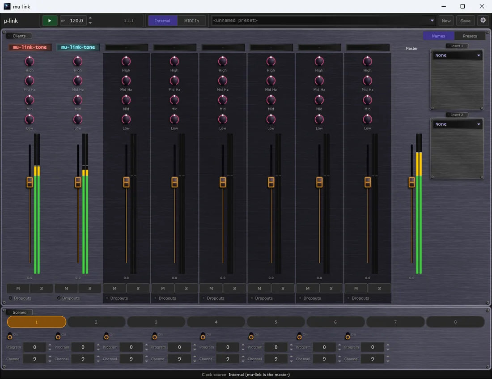
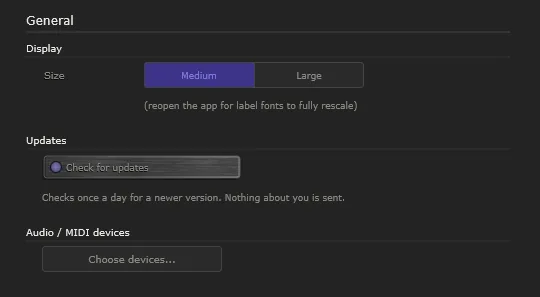
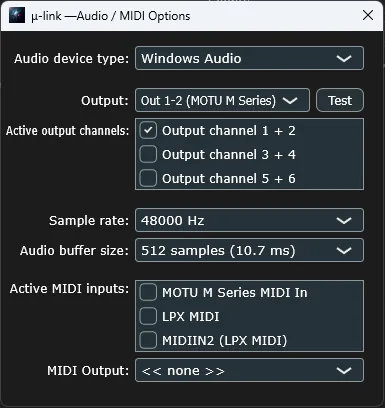
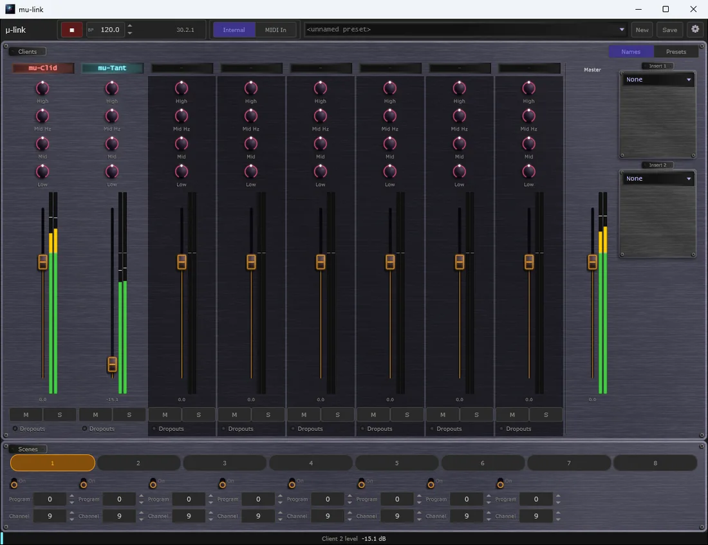
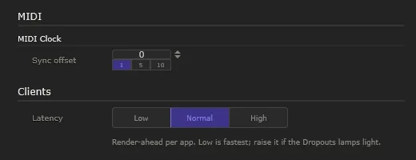
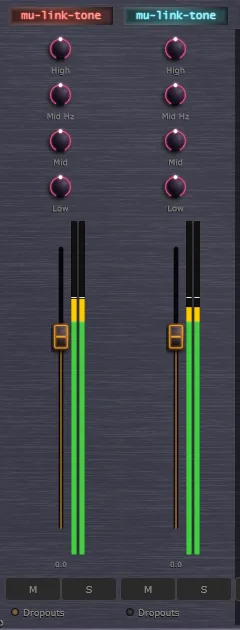

mu-Link Manual: Free Live Mixer and Clock Sync Hub User Guide
mu-Link: Audio Hub and Master Clock for the mu Family.
Prefer a file? Download the manual as a PDF. Back to mu-Link · release notes · all guides.
1. Introduction
mu-link is a companion application from Transwarp Development Project. It does two jobs for the mu family of instruments. First, it is a local audio hub: several mu standalone applications — mu-Clid, mu-Tant, and future siblings — send their audio to mu-link, which sums them and plays the mix through one hardware output. Second, it is the family's master clock: mu-link publishes a rock-solid, sample-accurate transport that every connected app locks to, so they all play in perfect sync.
mu-link is a standalone application only — there is no plug-in version. It is the thing your mu instruments connect to, not a thing you load into a DAW.
Who Is This For?
mu-link is for performers and producers who want to run more than one mu instrument at once — for example a rhythmic mu-Clid alongside an evolving mu-Tant drone — locked tightly together and mixed to a single output, without a DAW. It is built for the stage: it can also slave the whole rig to an external MIDI clock from a drum machine, groovebox, or DAW, and send MIDI clock out to outboard gear.

2. How It Works
Running two standalone audio apps at once normally means two separate connections to your soundcard, each with its own clock — which drift apart over time and cannot share one output cleanly. mu-link solves this the way professional audio systems do: it owns the one hardware output, and the apps send their audio to it through a fast shared-memory connection on the same machine.
Because mu-link owns the device, the soundcard's own clock becomes the single master clock for everything. Every connected app renders exactly in step with it, so there is no drift and no jitter — the sync is sample-accurate. The apps each render slightly ahead into a buffer, so a momentary hiccup in one app can never click or glitch the others. If a connected app crackles, reduce its load (for example, use a lighter preset).
mu-link is NOT a system-wide virtual sound card or audio driver. It only connects mu-family apps, by design — that keeps it simple, reliable, and driver-free.
3. Installation
mu-link ships as a single executable — mu-link.exe. There is no installer: copy it anywhere and run it. It is a standalone application with no plug-in formats.
Run only ONE audio server at a time. mu-link and its companion testing tools all share the same connection points, so two running at once will conflict. Launch a single mu-link.exe.
4. Interface Overview
The mu-link window has three parts:
- Transport bar (top) — the mu-link logo, Play / Stop, the master tempo, the position readout, the clock-source switch (Internal or MIDI In), the preset menu with New and Save, and the gear button that opens Settings.
- Clients mixer (middle) — one strip for each connected app, plus the Master strip and its two inserts on the right.
- Scenes panel (bottom) — eight scenes that send program changes to your connected apps.
Audio and MIDI devices are not chosen in the main window. Click the gear to open the Settings page; the Audio / MIDI devices button on that page opens the device dialog (see Choosing an Audio Device).

Update Check
mu-link can tell you when a newer version is available. Once a day it asks the transwarp.me website for the latest version number. When a newer version exists, a small Update available link appears at the right of the Status Bar, beside the Support link. Hover over it to see which version is out and which one you have.
- Click the link to open the download page in your web browser. mu-link never downloads or installs anything itself. The link then stays hidden for that version and comes back only when a still newer one is released.
- Right-click the link and choose Hide this notice to hide it for that version without opening the page.
Privacy: the check is a plain request for a public file. It sends nothing about you: no name, no identifier, no version number and no details of your computer. As with any request to a website, the site can see your internet (IP) address, as it would if you opened the page in a browser. The app compares the answer with its own version on your machine. To switch the check off, open Settings and, under General, untick the Check for updates box. With the box unticked, mu-link sends no request at all and shows no link. The box is ticked by default.
5. Choosing an Audio Device
Click the gear button at the right of the transport bar to open the Settings page. In the General group, click Choose devices... under Audio / MIDI devices. A device dialog opens. Pick the output device mu-link plays through here; this is the device the whole rig is summed to. Changes apply at once, and you can close the dialog when you are done.
- Output — choose your soundcard or audio interface. For the lowest latency choose a low-latency driver (WASAPI Exclusive, or ASIO if your interface provides it).
- Sample rate and buffer size — mu-link dictates these to every connected app, so the whole rig runs at one sample rate. A smaller buffer gives lower latency at the cost of more CPU.
- MIDI input — enable the port carrying MIDI clock if you want mu-link to slave to external gear (see External MIDI Clock Sync).
- MIDI output — choose a port to send MIDI clock out to outboard gear (see MIDI Clock Out).
If no device opens at launch (for example the default is in use), just pick a working one in the device dialog — mu-link starts driving the bus as soon as a device opens; no restart is needed.


6. Connecting Your mu Apps
Connecting is automatic — there is nothing to configure.
- Launch mu-link, then launch any mu standalone app (mu-Clid, mu-Tant, …) — in either order.
- Within about a second the app detects mu-link and attaches. The app's title bar shows 'mu-link connected', and it appears as a named strip in mu-link's Clients mixer.
- From then on the app's audio is summed into mu-link's output, and its transport follows mu-link's master clock.
- Quit mu-link and every app instantly reverts to its own audio device and internal clock — no restart needed.
MIDI in Connected Apps
- MIDI in — each app still hears the keyboards and controllers enabled in its own MIDI settings while connected, so program changes still load its presets. For now they arrive roughly 85 milliseconds late, which is under a tenth of a second. An app does not follow MIDI clock while connected; mu-link sets the tempo, so connect external clock to mu-link.
- MIDI out — only mu-Clid makes MIDI; mu-Tant, mu-Toni and mu-On send none. While connected, mu-Clid's MIDI output goes to the MIDI output chosen in mu-Clid's own MIDI settings, timed to line up with mu-link's audio and with mu-link's MIDI clock out.
- While connected, mu-Clid holds that MIDI output port itself: choosing none in its MIDI settings has no effect until mu-link disconnects. On disconnect it sends all-notes-off to the port and hands it back to the app.
mu-link's own MIDI output, chosen in the Audio / MIDI devices dialog, carries only MIDI clock and transport messages (see MIDI Clock Out). Give mu-Clid a different MIDI output port, because many Windows MIDI ports can be opened by only one application at a time.
Only the STANDALONE version of each app connects. The VST3 and CLAP plug-in versions are never affected — inside a DAW the host already owns the clock and audio device, so a plug-in never attaches to mu-link.
Up to eight apps can be connected at once. If an app is closed or crashes, mu-link automatically frees its strip after a moment.

7. The Mixer
Each connected app gets a channel strip in the Clients mixer, plus a Master strip on the right. From top to bottom a strip has the app's name, an equaliser (High, Mid Hz, Mid and Low knobs), a vertical fader with a stereo meter beside it, a level readout, Mute (M) and Solo (S) buttons, and the Dropouts lamp.
- Fader — sets the app's level in the mix.
- Stereo meter — two bars beside the fader show the left and right levels of that app. Each bar has a clip marker that lights if the signal reaches full scale and stays lit until you click the meter to clear it.
- Mute (M) — silences that app in the mix.
- Solo (S) — hears only the soloed app(s); everything else is muted while any Solo is active.
- Master — a fader and stereo meter for the summed output. Click its meter to clear the clip marker.
The faders use a rectangular cap like a small knob, with a pointer line across its middle that marks the level, running in a groove that lights up from the bottom to the cap. Every fader in the mixer looks and works the same way.
The master output is protected by a safety limiter, so the summed mix can never harshly clip the soundcard no matter how hot the connected apps run. Normal levels pass through untouched.
Latency and the Dropouts Lamp
Each connected app renders its audio a little ahead of time, so that a momentary slowdown in one app never glitches the mix. The Latency setting decides how far ahead. A shorter lead means less delay between an app and what you hear; a longer lead gives the apps more safety margin.
To change it, open Settings (the gear button) and look in the Clients section.
- Latency — Low, Normal or High. Low is about 43 milliseconds at 48 kHz, Normal about 85 milliseconds, High about 171 milliseconds (2048, 4096 and 8192 frames). Default: Normal. The setting applies to every connected app at once, and to any app that connects later. mu-link remembers it between sessions.
Start with Normal. If you want the tightest response and your computer copes, try Low. If you hear dropouts or clicks from an app, raise Latency to High.
Each app's strip also has a Dropouts lamp. It tells you when that app could not keep up and mu-link had to fill the gap with silence.
- Unlit — no dropouts. Hover over it and the status bar reads No dropouts.
- Red — a dropout has just happened.
- Amber — a dropout happened a little while ago and the lamp is holding the warning. Click the lamp to clear it.
A dropout in the first second after an app connects is normal and does not light the lamp. Changing Latency clears the lamps, because the old warnings no longer apply. Hover over a lit lamp and the status bar suggests raising Latency.
One caution: if your audio device uses a very large buffer, Normal leaves the apps little safety margin. If an app still drops out with a large buffer, choose High.


8. The Master Clock
mu-link is the tempo master for everything connected to it. Its Play / Stop button and tempo drive every connected app's sequencer, gate, and modulators in lockstep.
- Play / Stop — starts and stops the whole rig together. Stop holds the position; the next Play carries on from there.
- Tempo — the master BPM, 20.0 to 300.0 in steps of 0.1 (drag or use the arrows), shown for example as 127.5 BPM. While mu-link is the clock source (Internal), set it here; every connected app follows.
Because the clock is derived from the audio device, it is sample-accurate — connected apps stay perfectly aligned with no drift, however long you play.
9. External MIDI Clock Sync
mu-link can hand the tempo reins to an external device — a drum machine, groovebox, or DAW — by following its MIDI clock. This is essential for fitting mu-link into a larger live rig.
Setting It Up
- Open Settings (the gear button), click Choose devices... under Audio / MIDI devices, and enable the MIDI input port that carries the external clock.
- Set the clock-source switch on the transport bar to MIDI In (it offers Internal and MIDI In, and starts on Internal).
- Start your external device. mu-link follows its tempo, and its Start / Stop / Continue messages drive mu-link's transport.
mu-link also follows Song Position Pointer messages while the external device is stopped. Move the external playhead, press Continue, and the whole rig picks up from the new position.
While MIDI In is selected, a Clock lamp appears next to the tempo. Amber means mu-link is waiting for clock or still re-aligning, green means it is locked to the external tempo, and red means the clock stopped and the transport has stopped. Hover over the lamp and the status bar says which.
If the external clock arrives late or early against your audio, use Sync offset on the Settings page to nudge it (-50 to +250 milliseconds, default 0).
While slaved, the tempo field shows the detected BPM to a tenth and is read-only, and mu-link keeps its beats on the external device's downbeat, and the local Play / Stop is driven by the incoming clock.
Why It Stays Rock Solid
Raw MIDI clock is slightly jittery, so mu-link never uses it directly as its timebase. Instead it measures the incoming clock and smooths it into a stable tempo estimate, then drives its own sample-accurate audio clock at that tempo. The connected apps see the same clean, drift-free transport they always do — they never inherit MIDI jitter. The result is tight external sync without sacrificing timing stability.
10. MIDI Clock Out
mu-link can also send MIDI clock OUT, so outboard hardware (a delay pedal, a sequencer, a drum machine) locks to mu-link's tempo. Choose a MIDI output port in the Audio / MIDI devices dialog (Settings, then Choose devices...); mu-link emits standard 24-ppqn MIDI clock derived from its master clock. The clock pulses are evenly spaced at their exact times, not bunched together, so outboard gear reads a steady tempo. This works whether mu-link is the master (Internal) or itself slaved to an external clock (MIDI In) — in either case the outbound clock follows mu-link's transport.
mu-link also sends transport messages, so a connected sequencer or drum machine starts and stops with it:
- Start — sent when playback starts from the top. If the external clock restarts mu-link from the top while it is playing, mu-link sends Start again.
- Stop — sent when playback stops.
- Continue — sent when playback resumes from anywhere other than the top, preceded by a Song Position Pointer so the outboard gear jumps to the same position, rounded down to a whole sixteenth note.
You can change the MIDI output port while playing; tempo and position carry on unchanged.
11. Tips and Workflow
- Two-instrument rig: launch mu-link, then mu-Clid and mu-Tant standalones. Press Play in mu-link — both lock to its clock and sum to one output. Balance them with the gain knobs.
- Lowest latency: choose a WASAPI Exclusive or ASIO output and a small buffer size in the Audio / MIDI devices dialog (Settings, then Choose devices...).
- Slave to your groovebox: enable its MIDI port, switch the clock source to MIDI In, and hit play on the groovebox — the whole mu rig follows.
- Drive a pedal in time: select a MIDI output port to clock an outboard tempo-synced effect.
- Solo to audition: use a strip's S button to hear one instrument alone while the others keep running silently.
12. Troubleshooting
- An app does not connect — make sure mu-link is running and has an open audio device (open Settings and use Choose devices... to pick one). Apps only attach once mu-link has a working output. Also confirm you are running the STANDALONE app, not the plug-in.
- No sound — check the output device in the Audio / MIDI devices dialog, the Master gain, and that the connected app is actually producing sound (and is not muted in its strip).
- External clock not followed — confirm the correct MIDI input is enabled, the clock-source switch is set to MIDI In, and the external device is sending clock (start it playing).
- An app crackles or drops out — look at its Dropouts lamp. If it lights, open Settings, go to Clients and raise Latency (Low, Normal, High). Use High if your audio device uses a very large buffer.
- Nothing happens / conflict — make sure only one audio server is running. Two at once share the same connection points and will conflict.
13. Technical Specifications
- Format: standalone application (Windows); no plug-in formats.
- Connected apps: up to 8 simultaneously.
- Audio: stereo per app, summed to one stereo hardware output; one shared sample rate set by mu-link.
- Clock: sample-accurate master derived from the audio device; Internal (master) or MIDI In (slave) source.
- MIDI: clock input (slave) with tempo smoothing and Song Position Pointer; sample-accurate 24-ppqn clock output with Start, Stop, Continue, and Song Position Pointer.
- Mixer: per-app fader, mute, solo; master gain with a safety limiter; live stereo metering per app and on the master.
- Latency: Low 2048, Normal 4096 (default) or High 8192 frames of render-ahead per app; a Dropouts lamp on each app strip.
- Connection: local shared-memory bus (same machine); no virtual audio driver, no network.
- Third-party libraries: JUCE.
Prefer a file? Download the manual as a PDF. Back to mu-Link · release notes · all guides.